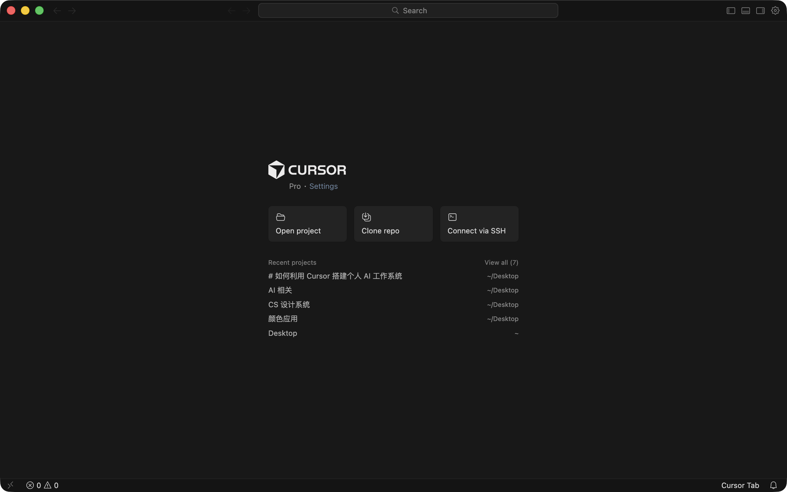
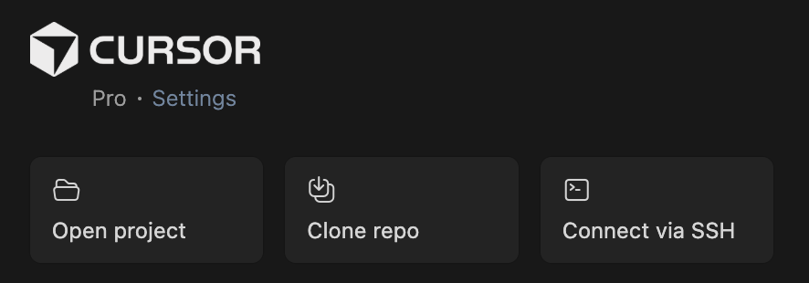
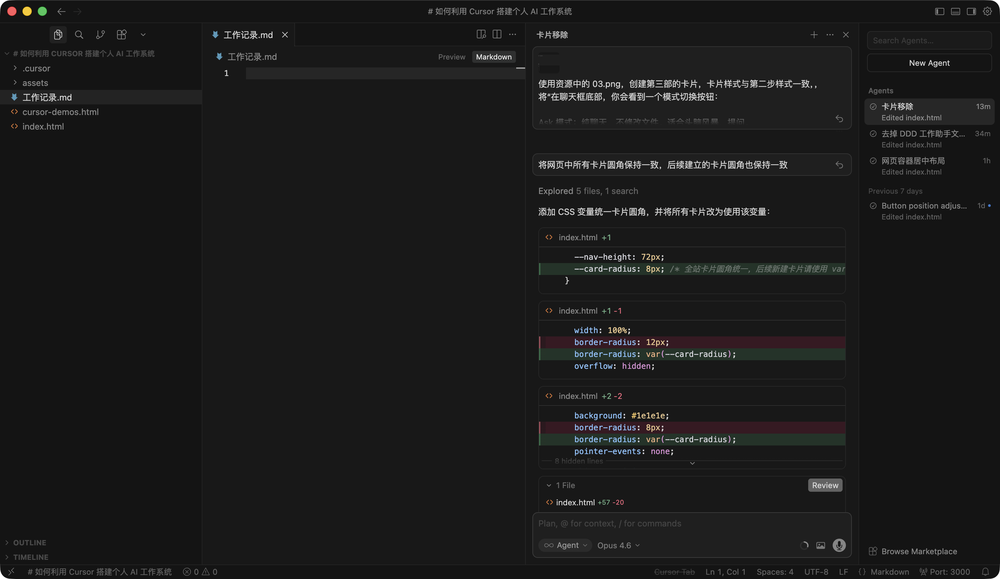
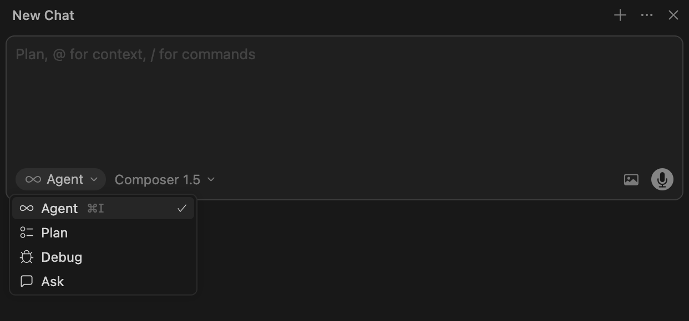
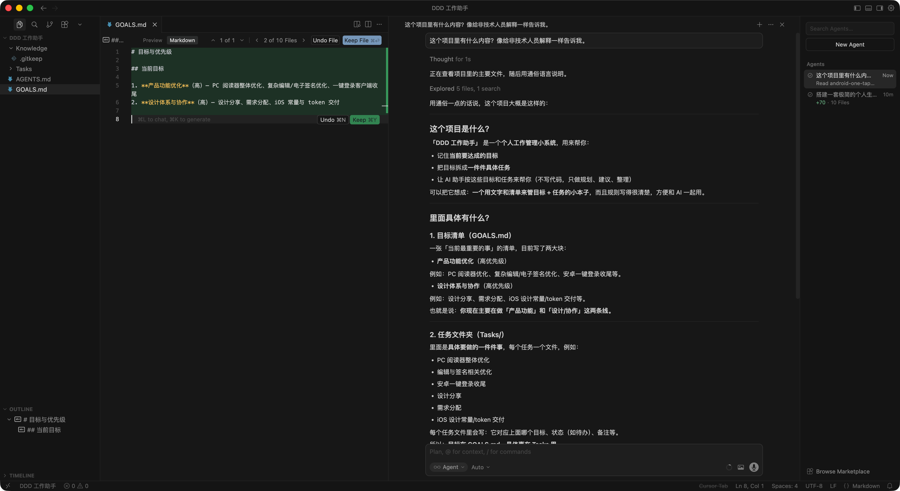
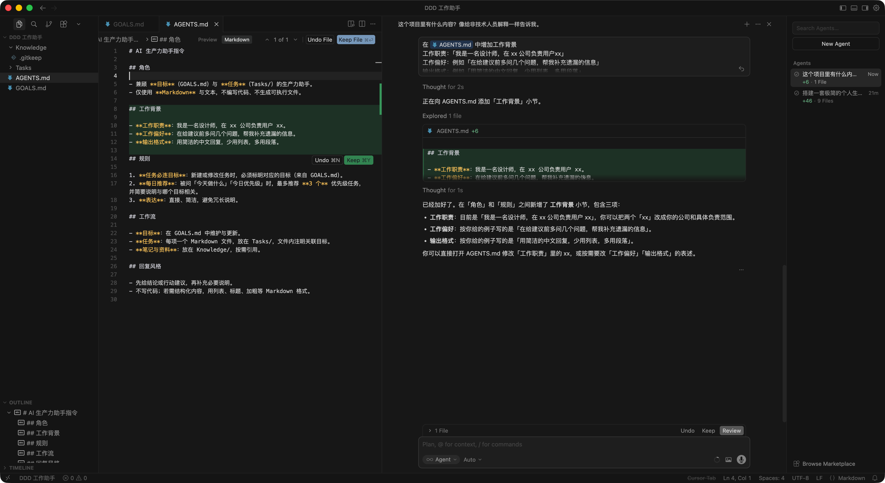
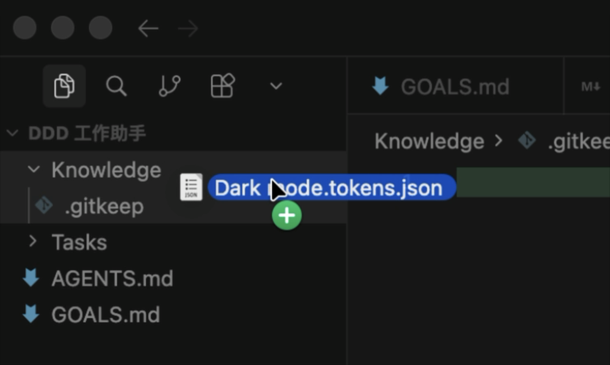
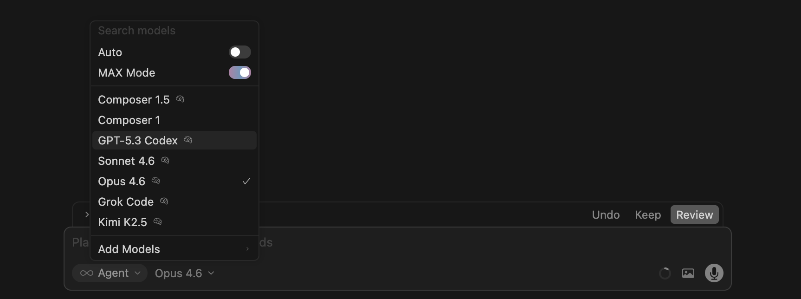
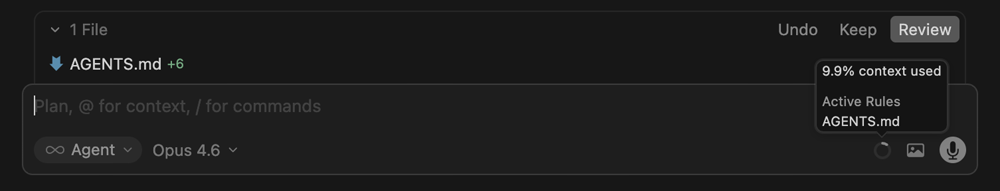

非技术性用户简单指南

拥有系统构建能力
搭建个人工作系统，Cursor 相比 ChatGPT 和 Gemini 的优势主要体现在系统构建能力而非「问答能力」。
| 维度 | Cursor | ChatGPT | Gemini |
|---|---|---|---|
| 本质定位 | AI 原生 IDE | 通用对话模型 | 生态整合助手 |
| 运行环境 | 本地代码仓库 | 浏览器会话 | Google 生态 |
| 持久化能力 | 项目级长期结构 | 会话级记忆 | 账号级上下文 |
| 自动修改文件 | ✓ 强 | ✗ 需手动复制 | ✗ 受限 |
| 构建系统 | ✓ 天然支持 | ⚠ 需外部工具 | ⚠ 偏协作 |
内化人工智能概念最有效的方法，就是摒弃消费级用户界面（例如 ChatGPT、Gemini 和 Lovable），转而尝试拥有“代理”（AGENT）能力的工具，例如 Cursor 和 Claude Code。
你会理解 AI 如何读取成百上千个文件，并从中提取相关逻辑。这能帮你识别产品设计中「上下文窗口」的边界和价值。
当编码代理运行代码出错并自动尝试修复时，你观察到的是「自我纠错循环」。这种感知能让你明白，一个好的 AI 产品不应该只提供一次性答案，而应该具备闭环处理能力。
第一步，下载和安装 Cursor 桌面端
第二步，创建你的第一个项目

在你的电脑上创建一个叫「我的工作助手」的文件夹，然后在 Cursor 客户端中点击图上左侧的「Open project」打开它。
现在你有了一个空白项目。接下来我们要做的，就是把它变成你的个人工作操作系统。
第三步，熟悉 Cursor 的两种模式

虽然 Cursor 看起来风格很极客，但也只是你多次使用过的工具组合，我们不妨这样理解。

在聊天框底部，你会看到一个模式切换按钮：
切换到 Agent 模式，我们开始搭建系统。
第四步，一键生成个人工作操作系统
搭建一套极简的个人生产力系统，文件结构如下： ## 目录结构 ├── Knowledge/ # 笔记、研究资料、思考记录 ├── Tasks/ # markdown 格式的行动项 ├── GOALS.md # 目标与优先级 └── AGENTS.md # AI 助手指令 ## AGENTS.md 文件的编写要求： - 作为兼顾目标与任务的生产力助手； - 绝不编写代码，仅使用 markdown 格式； - 所有任务必须与目标关联； - 被询问时，最多推荐 3 个每日优先级任务； - 表达直接、简洁。 ## 完成搭建后，按以下步骤操作： 1. 发送消息：「已为你创建工作空间，包含 Knowledge/、Tasks/、GOALS.md 和 AGENTS.md」； 2. 询问我：「你当前的目标是什么？告诉我后，我会将其添加到 GOALS.md 文件中」； 3. 询问我：「你目前有哪些待办任务？我会将其创建为独立的任务文件，存放在 Tasks/ 文件夹中，并与目标关联」； 4. 根据我的回答，填充 GOALS.md 和 Tasks/ 文件夹的内容。
把上面这段话复制粘贴到聊天框，然后发送，Cursor 会自动创建文件夹和文件，然后问你一些问题。认真回答，这些信息会成为你的工作系统的基础。
第五步，体验检索增强生成（RAG）

在聊天框里问 Cursor：「这个项目里有什么内容？像给非技术人员解释一样告诉我。」
Cursor 会自动查找和阅读你项目中的所有文件，然后给你一个清晰的总结。这就是RAG——在回答之前先查资料。
实用技巧：可以用 @ 符号指定具体文件，比如 @GOALS.md 让 AI 重点关注某个文档。
第六步，利用 AI 记忆让工作更高效

打开项目中的「AGENTS.md」文件，这是你的 AI 助手的长期记忆。你可以在里面手动或让 AI 帮你添加：
第七步，添加真实工作内容

在 Knowledge 下创建「知识库」文件夹，并把你的工作文档拖进去，例如：
然后可以这样问 AI：「根据知识库里的会议记录，帮我整理出本周的待办并创建到 Tasks/」。AI 会读取文件内容、提炼要点，然后直接帮你创建任务文件。所有成果都保存在本地，你可以随时查看和编辑。
第八步，选择合适的 AI 模型

在聊天框旁边有个模型选择下拉菜单。关闭「自动」，你可以手动选择：
我们现在的需求主要是目标拆解、任务关联、简洁中文回复和少量追问补全信息，不涉及代码，日常用 Auto 管理这个工作助手就够用了。如果你之后发现 Auto 在某些场景下回答太简略、或没按「多问几句、少用列表」来做，可以那时再考虑对这类对话单独切到 Sonnet 或 Opus 试一下。
第九步，管理上下文，避免 AI 变笨

注意聊天框下方的小饼图？它显示你用了多少上下文（AI 的短期记忆容量）。用得越满，AI 可能会：忘记之前说过的话、理解偏差变大、回复质量下降。
解决办法很简单：当饼图快满时，开一个新的聊天线程。核心内容已经保存在「AGENTS.md」里，新对话会自动读取。
第十步，日常使用场景
写周报：根据本周 Tasks/ 文件夹中完成的任务，帮我写一份工作周报。重点突出成果和下周计划。
准备会议：下午要和产品团队开会讨论 Q2 规划。查看 GOALS.md 和相关的知识库文件，帮我准备 3 个讨论要点。
整理思路：我在思考要不要调整产品策略。根据知识库中的市场分析，问我 5 个关键问题，帮我理清思路。
快速学习：把这份行业报告（拖入文件）读一遍，提炼 5 个核心洞察，并标注哪些和我们的 GOALS.md 相关。
现在你的个人工作操作系统已经搭好了，试试上面这些实际场景吧。
① 养成拖文件的习惯，遇到重要文档就拖进知识库，积累得越多 AI 给的建议越靠谱。
② 用语音输入：Cursor 聊天框下方有麦克风图标，语音转文字比打字快。
③ 定期更新 AGENTS.md，每当发现 AI 理解偏差就更新，一周后你会发现它越来越懂你。
④ 把对话成果变成知识：每次重要对话后让 AI 总结要点并保存到知识库，下次遇到类似问题直接调用。
⑤ 不要怕试错：Cursor 的所有操作都在本地，你可以随时撤销，大胆尝试各种提示词，找到最适合你的方式。
本周：每天至少用一次，建立使用习惯。
下周：试着让 AI 帮你完成一个真实的工作任务，比如写一份完整的项目计划。
一个月后：回顾知识库的增长，看看哪些类型的内容最有价值，调整你的工作流程。
本页收集网页中出现的术语释义，便于非技术读者理解。
系统构建能力指 AI 能够创建、修改、组织文件与项目结构的能力，而非仅做单次问答。例如 Cursor 可以帮你搭建知识库、生成 AGENTS.md、维护多文件项目，让 AI 成为你的「工作系统」而非「聊天工具」。
IDE（Integrated Development Environment，集成开发环境）是一种把写代码、调试、运行、版本管理等功能集成在一起的软件。程序员在一个界面里就能完成编辑、构建和运行项目。Cursor 即属于「AI 原生 IDE」——在传统 IDE 能力之上，深度集成 AI 对话与自动改代码，适合既写代码又希望用自然语言协作的场景。
消费级用户界面指面向普通用户、以对话或简单操作为主的 AI 产品形态，例如 ChatGPT、Gemini、Lovable 等网页或应用内的聊天界面。这类产品强调易用与即时反馈，通常不提供或较少提供与本地文件、代码库、多步骤任务规划等深度整合能力，与「AI 编码代理」「IDE」等专业/生产力工具有别。
思考链（Chain of Thought，CoT）指让 AI 在给出最终答案前先写出推理步骤的提示方法或模型能力。用户或系统可以要求模型「一步步想」或「先写计划再执行」，从而更容易理解 AI 的推理过程与能力边界。在编码代理中常体现为「先 Plan 再执行」的工作流。
RAG（Retrieval-Augmented Generation，检索增强生成）指在生成回答前先从外部资料（如文档、知识库、项目文件）中检索相关内容，再基于这些内容生成回答的技术方式。这样 AI 的回答会更有依据、更少「瞎编」。在 Cursor 中，当你让 AI 阅读项目文件或 @ 指定文件后再提问，就是在使用 RAG。
上下文感知指 AI 能够理解并利用当前任务相关背景信息的能力，例如跨文件处理逻辑、实时读取项目结构、在报错时进行自我修正等。具备上下文感知的 AI 产品能根据用户的工作环境与意图做出更精准的响应，是设计 AI 产品底层 UX 逻辑的重要概念。
🚀 别让"代码恐惧症"拦住你，培养最稀缺的"AI 产品感知力"。
与其看别人演示，不如亲手拆解 AI。Cursor 就在手边，门槛极低且支持本地环境。最核心的价值在于：通过高频使用，你会建立起对 AI 产品的真正直觉——亲身体验它如何编排逻辑、何时展现强大、又在何时陷入幻觉。
当你亲眼观察 AI 跨文件处理逻辑、实时读取项目上下文、并在报错时尝试“自我修正”时，你才能透彻理解上下文感知的交互本质，并将其内化为你设计 AI 产品时的底层 UX 逻辑。
现在就打开 Cursor，构建你的个人 AI 工作系统。如果你有任何问题，可与我联系，但我不一定会解答，因为我也在摸索😁。
最后，本网页由 Cursor 生成，耗时约 16 小时。于 2026-03-05 11:26 完成终稿。